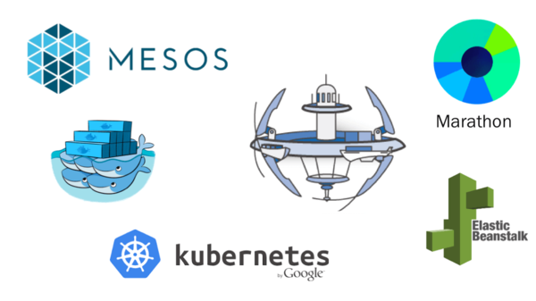

In-cluster testing is a great concept and looking forward to seeing how it develops.
An HPE Open Source Project
In-Cluster Testing
- Test in a real environment
- Real infrastructure & configuration
- Test internal services & API endpoints
Run in any Docker Cluster
- Swarm
- Kubernetes
- CoreOS Fleet
- AWS ECS
- DIY Docker Cluster

Any Test Any Tool
- Chaos
- Performance
- Security
- Integration
- Functional
- API
Event Driven Testing
- Swarm, Kubernetes, Mesos-Marathon
- Host events
- Configuration changes
- Timer events
- API endpoint
Testimonials
Just like a tugboat brings container ships safely to port, TUGBOT delivers Docker containers safely to production at speed and scale. Tugbot In-Cluster Open Source Framework presented at Docker and Microservices meetups:
-

Docker San Francisco
DockerHQ Meetup
-
I like your work and will go over Tugbot. It sounds very interesting to me.

Software Engineer - Docker
DockerHQ Meetup
-
That was a good presentation and I like the idea of making Continuous Testing a bigger part of the CI/CD idea.

Docker San Jose
Docker Meetup
-
Remarkably, all 3 presenters at this Docker meetup presented higher-quality material within the space of 2 hours than I got in the all-day Ansible gathering. .. this time the talk was much better than the pizza :-) !

Docker Palo Alto
Docker Meetup